AgentTesla
Deep analysis of a visual basic spyware Trojan
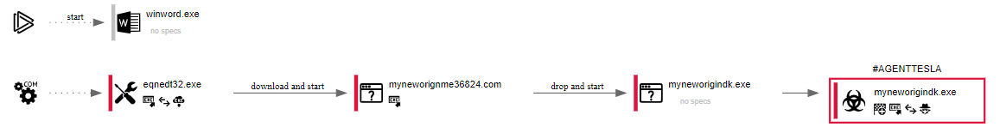 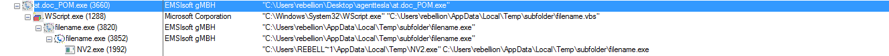
Stage 1 - Word Document with OLE package
| Fingerprint | Value |
|---|---|
| MD5 | 2a1017b1a2809c3e0c6e416bb0b411bc |
| SHA-1 | a04a046689ef18ccf2037ad58573c44f98c10766 |
| SHA-256 | 13e9cde3f15e642e754aae63259bb79ed08d1acda93a3244862399c44703c007 |
| Vhash | 2a5b6d36e65f9853aa701bc01f1249c4 |
| SSDEEP | 12288:o/LzoF3KjD1gUnXDG0yWDKDsHvX07CC0j:owyp7njyWDKDefMJy |
| File type | Office Open XML Document |
| Magic | Zip archive data, at least v2.0 to extract |
| File size | 538.40 KB (551325 bytes) |
| Creation Time | 2018-03-21 03:45:00 |
The first stage of the malware is an ancient-looking word document carrying an executable file. It will ask the victim to double click the icon to enable a clear view and once clicked it will active the content of the OLE package which will result in the extraction of the executable file to the system's temp directory and execute it. The dropped exe is named POM.exe.
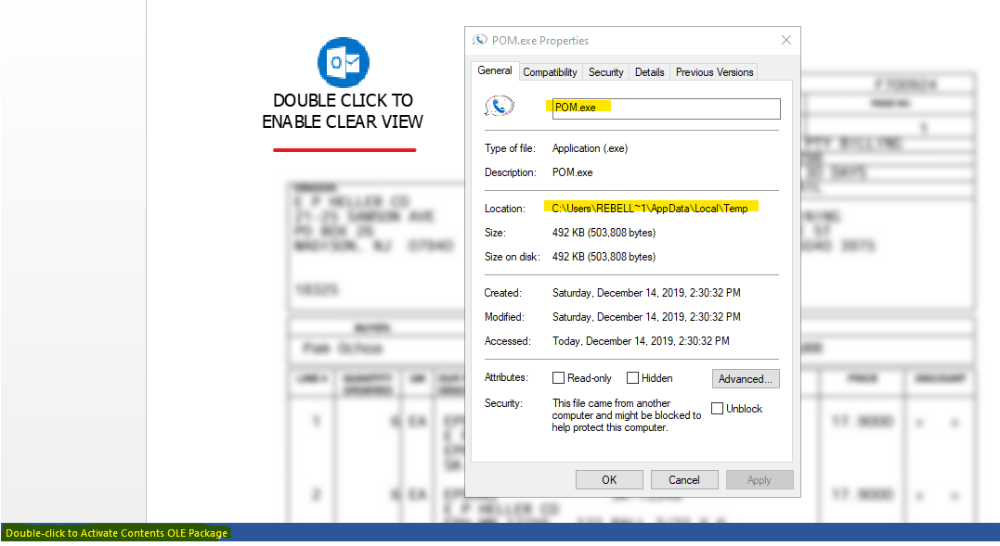
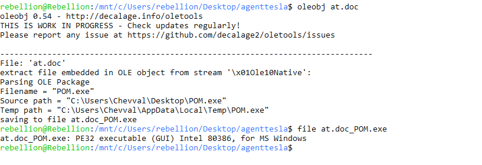
Stage 2 [Dropper]- POM.exe Analysis
| Fingerprint | Value |
|---|---|
| MD5 | 9c7db83c37474fb2dfaf0c51ed2c5e8a |
| SHA-1 | ab5f635cec1688afa227f4281541896beb847b01 |
| SHA-256 | a859765d990f1216f65a8319dbfe52dba7f24731fbd2672d8d7200cc236863d7 |
| Vhash | 0550367d051)z333z |
| Authentihash | 8e2be8ed9bc6c2dbf39bc8b4904b850a18ecae2a7b1325e3bc0eab7bfb1ceb32 |
| Imphash | defde10fc0be74007a204f5cff60775f |
| SSDEEP | 12288:9sZehDRKmp0FyRDJtGngUqCoJby6i5VeR//hEWi6lQYSSSSSSSSSSSSSSSSSSSSX:iAhcZyROdqCKbyfIBLlQ |
| File type | Win32 EXE |
| Magic | PE32 executable for MS Windows (GUI) Intel 80386 32-bit |
| File size | 492.00 KB (503808 bytes) |
| Creation Time | 2018-03-21 03:44:01 |
The file is a Native Microsoft Visual Basic executable. Commonly, VB6 files are used as droppers or downloaders for other campaign stages.

from behavioral analysis, the file will drop two files in %TEMP%\subfolder :
filename.exefilename.vbs
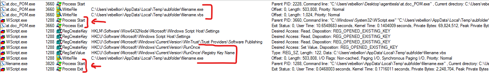
It will then run filename.vbs with WScript.exe and exit.
xxxxxxxxxx"C:\Windows\System32\WScript.exe" "C:\Users\rebellion\AppData\Local\Temp\subfolder\filename.vbs" Analyzing filename.vbs content I found that it writes itself to the RunOnceregistry key with the key-value Registry Key Name to reach persistence on the victim's machine.
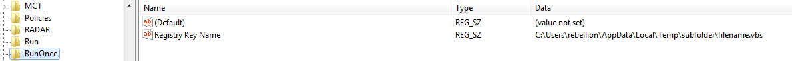
It then starts filename.exe then exit. The hardcoded strings within filename.vbs are created dynamically by POM.exe to get the current username. filename.vbs content:
xxxxxxxxxxOn Error Resume NextSet WshShell = CreateObject("WScript.Shell")myKey = "HKCU\Software\Microsoft\Windows\CurrentVersion\RunOnce\Registry Key Name"WshShell.RegWrite myKey,"C:\Users\rebellion\AppData\Local\Temp\subfolder\filename.vbs","REG_SZ"WshShell.Run "C:\Users\rebellion\AppData\Local\Temp\subfolder\filename.exe"Stage 3 [Part 1]: filename.exe Analysis
| Fingerprint | Value |
|---|---|
| MD5 | a9107835c34c000cc61eaf5aefb50188 |
| SHA-1 | 1f697d49968869d76539e67cb30d4f7a76ede3a0 |
| SHA-256 | b4f81d9d74e010714cd227d3106b5e70928d495e3fd54f535b665f25eb581d3a |
| Vhash | 0550367d051)z333z |
| Authentihash | d190b261600887386e7fa0222bcad7ceb5fdf3417b470467daed342881a1de0c |
| Imphash | defde10fc0be74007a204f5cff60775f |
| SSDEEP | 12288:GsZehDRKmp0FyRDJtGngUqCoJby6i5VeR//hEWi6lQYSSSSSSSSSSSSSSSSSSSSq:xAhcZyROdqCKbyfIBLlQ |
| File type | Win32 EXE |
| Magic | PE32 executable for MS Windows (GUI) Intel 80386 32-bit |
| File size | 492.00 KB (503808 bytes) |
| Creation Time | 2018-03-21 03:44:02 |
The file is a VB6 packed binary that will unpack the malicious code and write it to a newly created instance of itself. This technique is commonly described as Process hollowing
Process hollowing occurs when a malware unmaps (hollows out) the legitimate code from memory of the target process, and overwrites the memory space of the target process with a malicious executable.
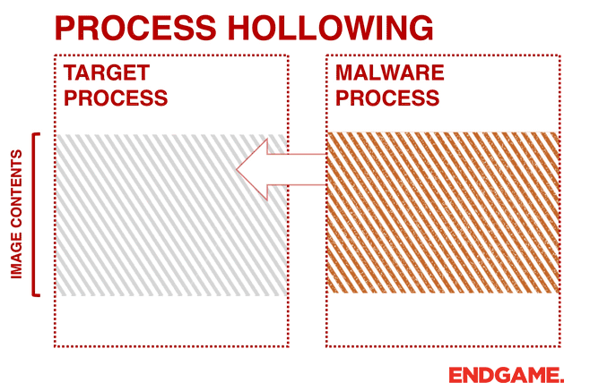
The malware first creates a new process to host the malicious code in suspended mode this is done by calling CreateProcessInternalW and setting the Process Creation Flag to CREATE_SUSPENDED (0x00000004). The primary thread of the new process is created in a suspended state and does not run until the NtResumeThread function is called.
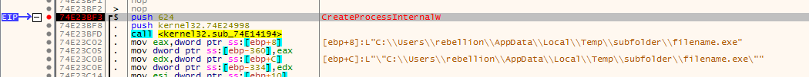
Next, the malware needs to swap out the contents of the legitimate file with its malicious payload. This is done by unmapping the memory of the target process by calling either ZwUnmapViewOfSection or NtUnmapViewOfSection. This two APIs release all memory pointed to by a section.
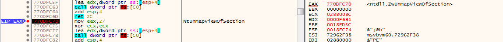
Now that the memory is unmapped, the loader performs VirtualAllocEx to allocate new memory for the malware ( the problem here is VB6 uses a VM that will allocate and deallocate memory constantly so it's not efficient to trace which call(s) will contain the malicious code. Uses ZwWriteVirtualMemory malware can then write each of the malware’s sections to the target process space.
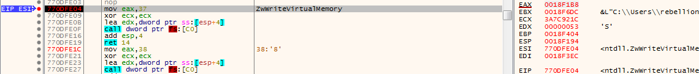
The malware calls SetThreadContext to point the Entrypoint to a new code section that it has written. In the end, the malware resumes the suspended thread by calling NtResumeThread to take the process out of suspended state.
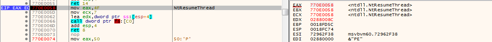
So the key to unpack the malware is to breakpoint on NtResumeThread and dump the hollowed process from memory using tools like Scylla and OllyDumpEX
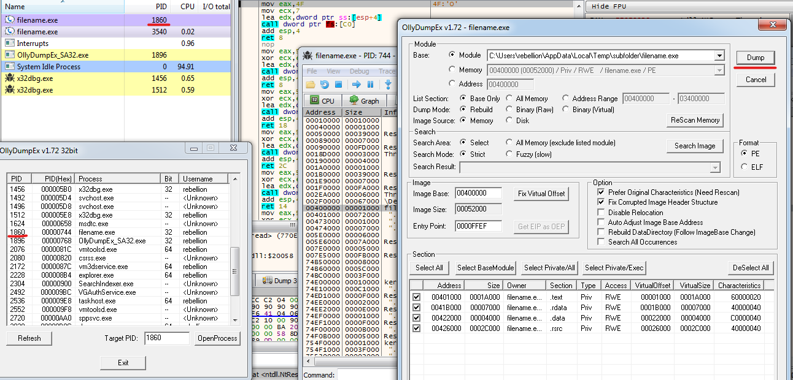
Stage 3 [Part 2]: Unpacked.exe Analysis
The file will first check for Cor_Enable_Profiing environment variable is set to 1 or if one of the DLLs mscorjit.dll or clrjit.dll is mapped into current program's virtual address space, if any condition is true it will exit without doing any action as an anti-Debugging technique.
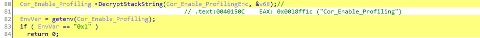
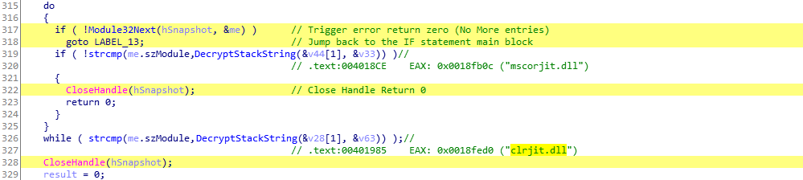
If not, it will go back to LABEL_13 and continue the execution process
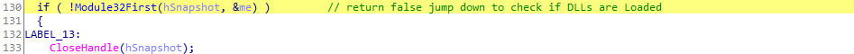
it first decrypts the resource name "__" from an encrypted stack string and uses it to load an encrypted resource file using FindResourceA and LoadResource API functions
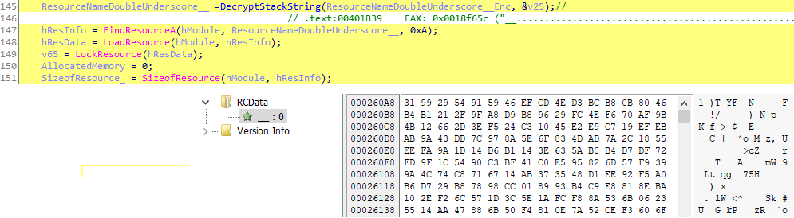
the decrypted resource turned out to be another executable file (a .Net one), which then gets passed to AllocateMemForDecryptedBuff to allocate a memory buffer with the decrypted data. after this step DecryptedBuff is filled with zeros and deallocated.
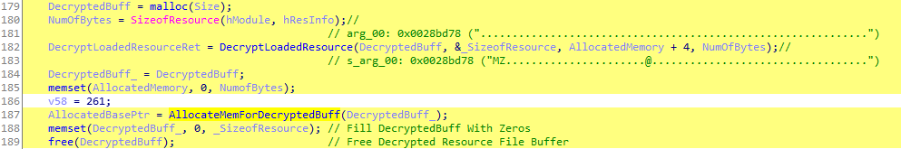
What's special about AllocateMemForDecryptedBuff function is that it keeps the MZ header and DOS stub without even touching them while modifying and mapping specific parts of the decrypted resource to keep it runnable from memory but corrupted when dumping it to a file which is smart enough as an anti-Dumping technique.
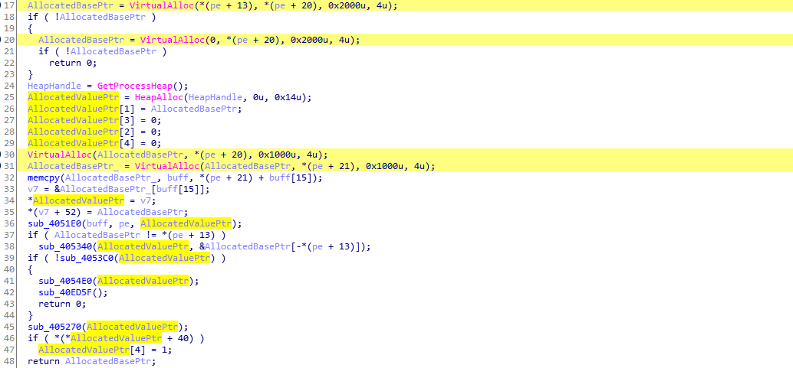
After loading the needed libraries the malware will jump directly to CoreExeMain and start executing the .Net managed code from there.
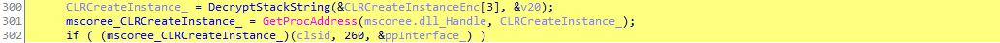
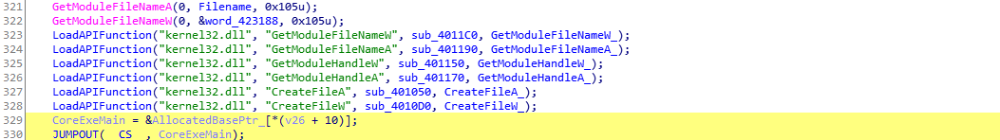
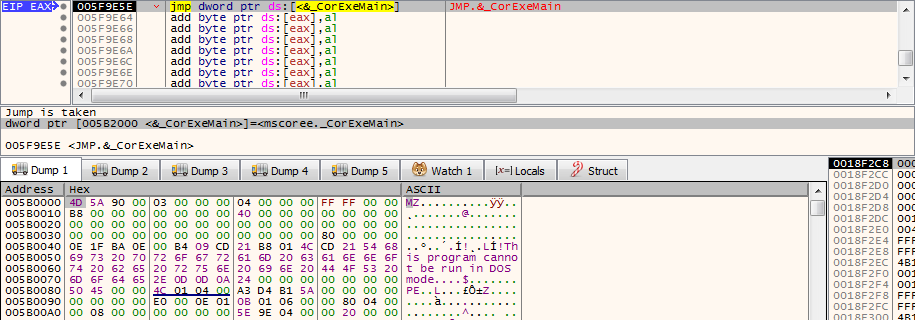
So all we need to dump a valid copy from the decrypted resource is to dump it just after calling the DecryptLoadedResource function, right?
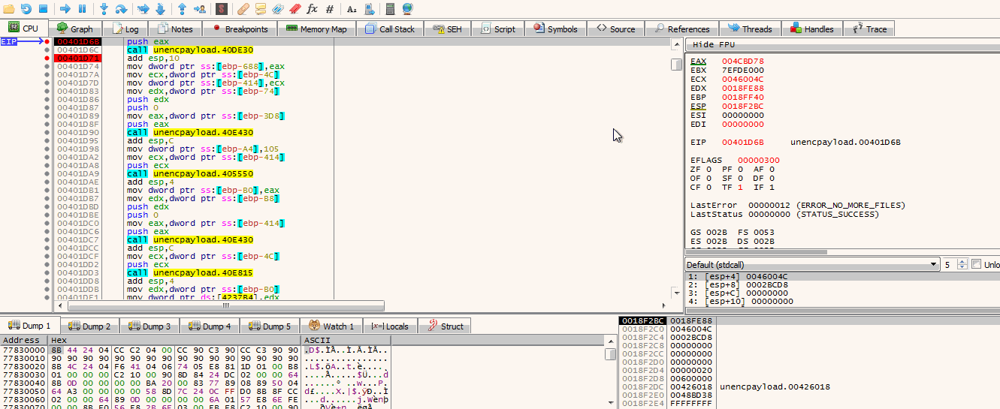
and just use any hex editor to remove everything before the MZ header, I used HxD.
Stage 3 [Part 3]: Dumped.exe Analysis
The file we dumped was obfuscated to harden the analysis but.
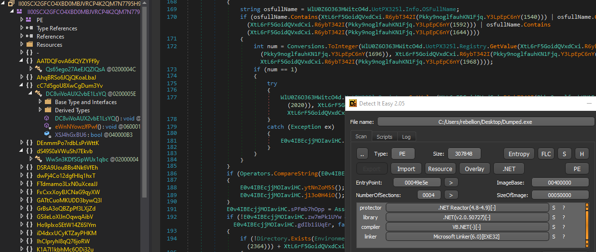
Deobfuscating the first layer of obfuscation turned out there is a function called smethod_0 responsible for string decryption and all strings are passed to it first:
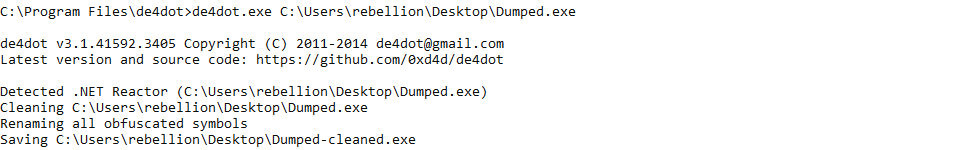
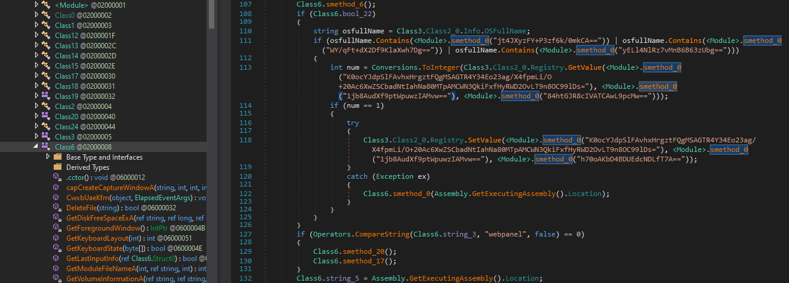
AgainDe4dot can emulate the string decryption for us, we just need the function token, we can get it from Dnspy by navigating functions:
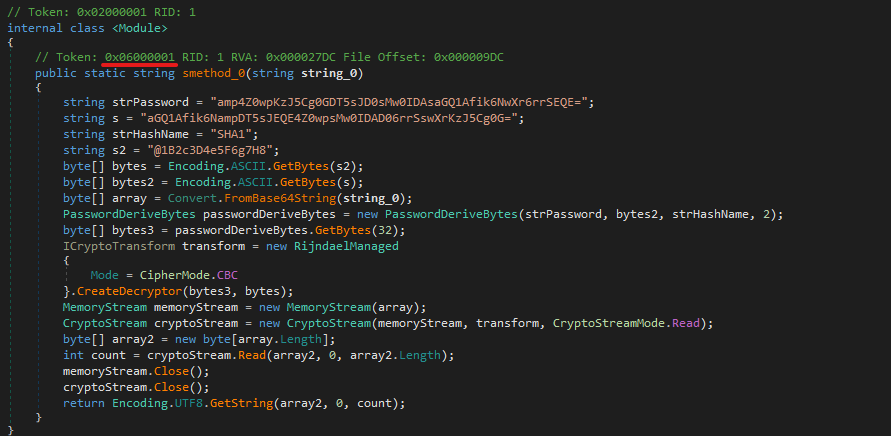
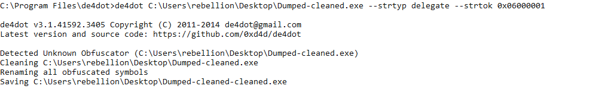
And now we can start our code Analysis
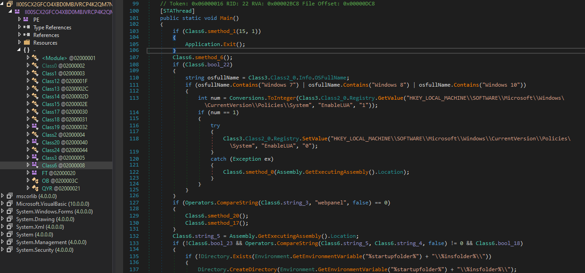
Analyzing the program, I found that once executed, it waits for 15 seconds then goes through the currently running processes to kill any duplicate processes found. the following two if statements are responsible for
- Identify the current OS version [7, 8, 9] and disable the Limited User Account
LUAfrom the registry to bypass User Account ControlsUAC - send
uninstallandupdatecommands to the C&C server. If the response to theuninstallcommand from the server contains anuninstallstring, it cleans up the information it has written on the victim’s machine and exits.
However they were disabled using a previously set variables:
bool_SetToFalse = FalseStr_SetToSmtp = "smtp"
Boolean variables are used heavily inside the code to control the execution flow with predefined values.
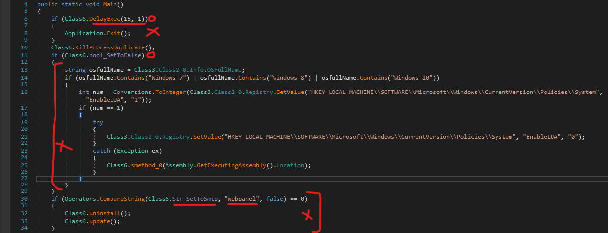
Main functions functionalities could be identified by the type value.
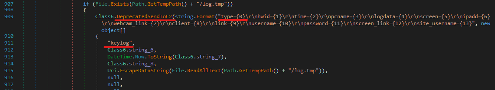
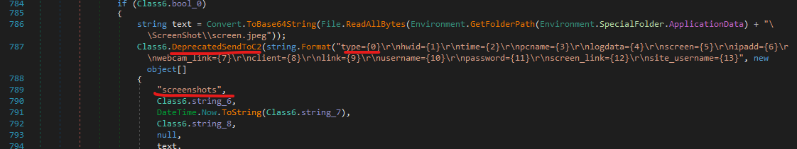
The reason why I renamed the function taking the formatted data to DeprecatedSendToC2 is that it won't send anything! the attacker replaced the C2 domain with %PostURL% which will always result in an exception and enter the empty catch at the bottom of the function then just return. Mostly the malware used this function before to encrypt and send data over HTTP but now it's useless.
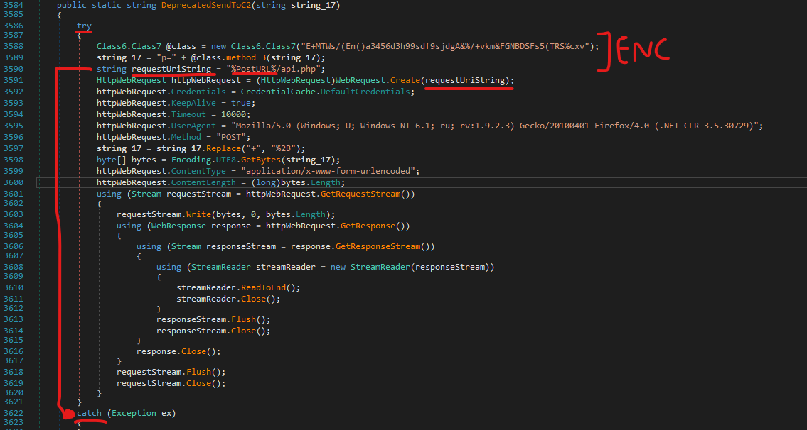
However, the author uses a free Zoho email to log and receive the data over SMTP (Port 587) instead.
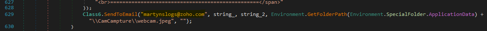
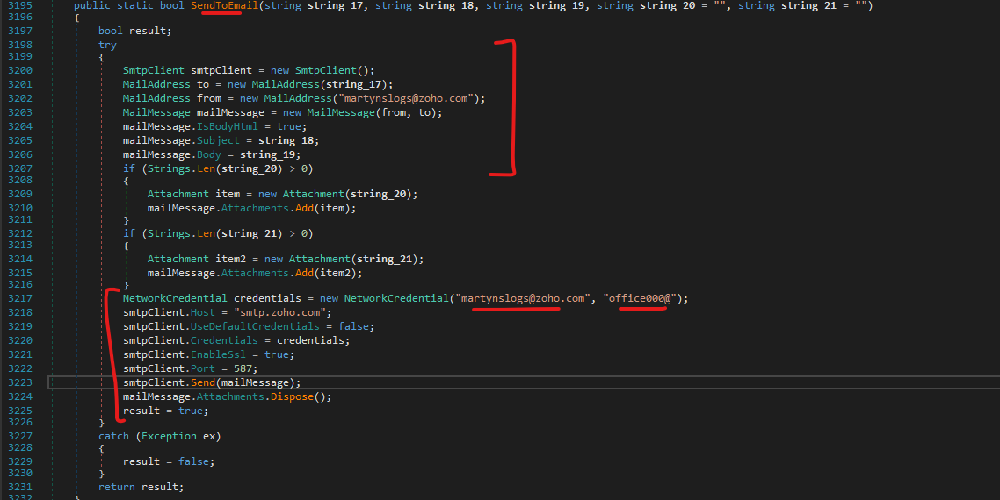
Also not all functions used by DeprecatedSendToC2 were used by SendToEmail function so let's focus on the 4 main functions that uses SendToEmail
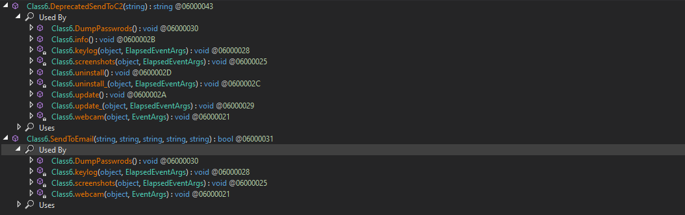
DumpPasswords
Function collects credentials from a variety of software on the victim’s machine. It can collect user credentials from the system registry, local profile files, SQLite database files, and so on. Once it has captured the credentials of one the software packages if encrypted it tries to decrypt it and send it over SMTP.
Software targeted by the malware are identifiable from a function used by every password harvesting sub-function
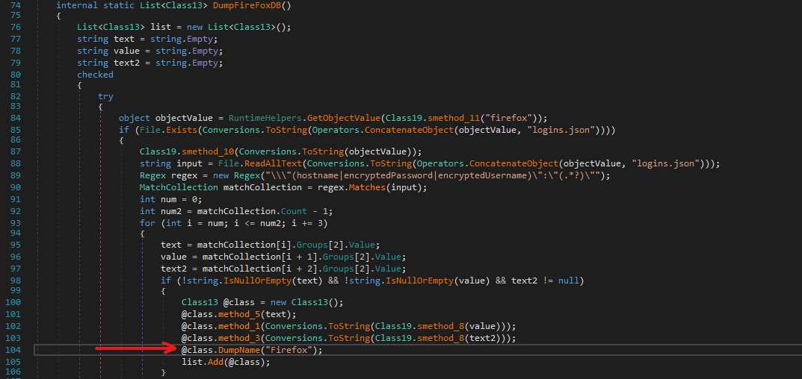
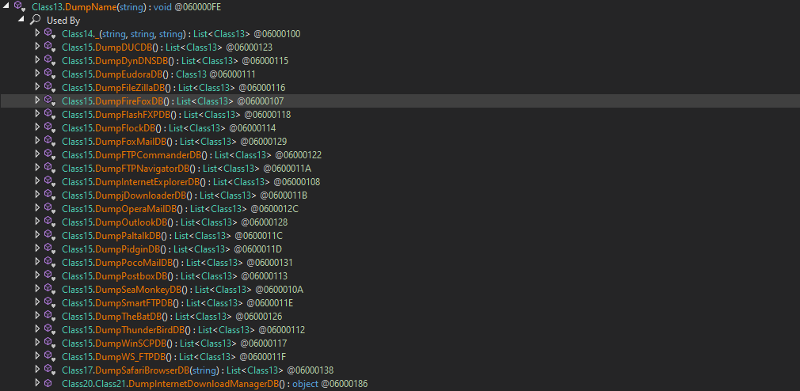
So based on my analysis, this malware can obtain the credentials from the following software.
Browsers
- Google Chrome
- Mozilla Firefox
- Opera
- Yandex
- Microsoft IE
- Apple Safari
- SeaMonkey
- ComodoDragon
- FlockBrowser
- CoolNovo
- SRWareIron
- UC browser
- Torch Browser
Email clients
- Microsoft Office Outlook
- Mozilla Thunderbird
- Foxmail
- Opera Mail
- PocoMail
- Eudora
- TheBat
FTP clients
- FileZilla
- WS_FTP
- WinSCP
- CoreFTP
- FlashFXP
- SmartFTP
- FTPCommander
Dynamic DNS
- DynDNS
Video chatting
- Paltalk
- Pidgin
Download management
- Internet Download Manager
- JDownloader
KeyLog
Before the Main function is called, three hook objects are defined in the construction function of the main class. These are used for hooking the Keyboard, Mouse, and Clipboard. It then sets hook functions for all of them so that when the victim inputs something by keyboard, or when the clipboard data is changed (Ctrl+C), the hook functions will be called first.
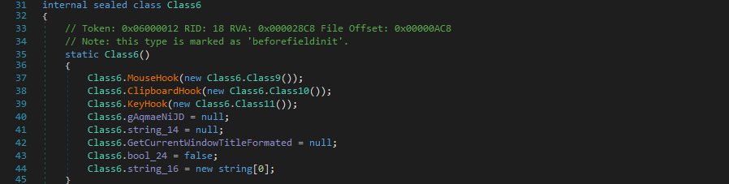
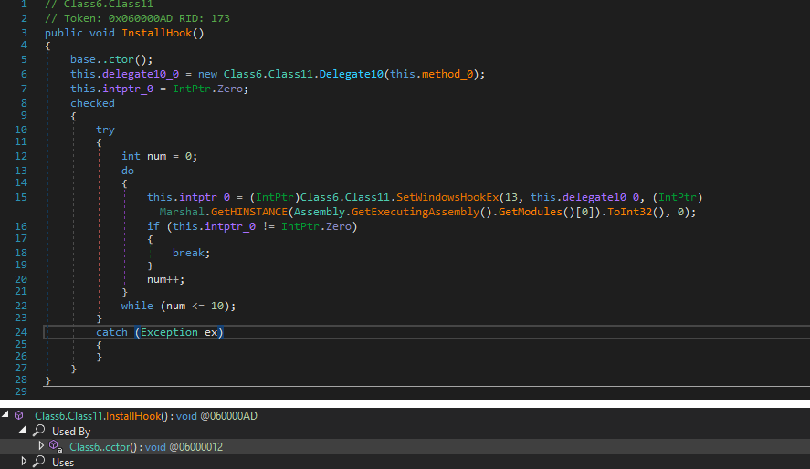
The keylog file is saved to %temp%/log.tmp and it gets concatenated with other information taken from the machine before sending, collected information includes:
- Username
- PC Name
- OS Ful Name
- OS Platform
- OS Version
- CPU
- RAM
- ViedoCard Name
- ViedoCard Memory
- Public IP address
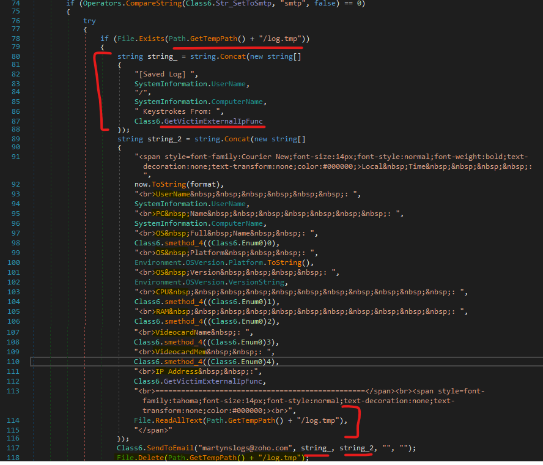
then the formatted data is sent and the log file is deleted. the system info functions including GetVictimExternalIp Function are used across the 4 malware modules.
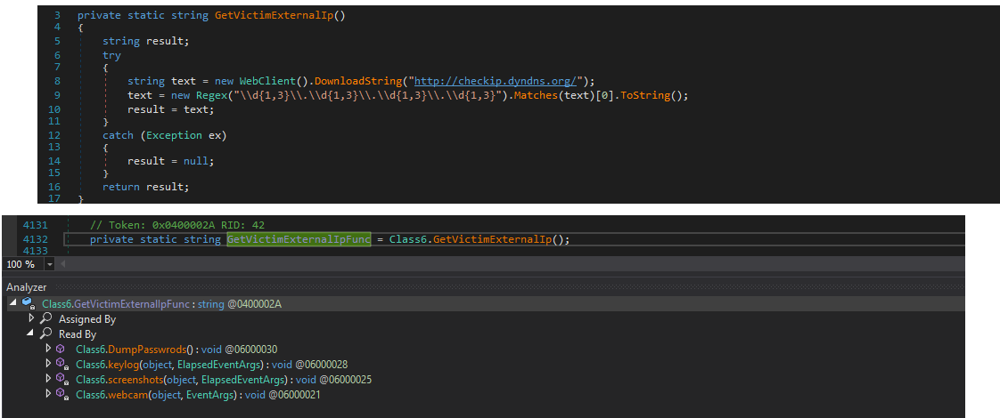
ScreenShot
Function Takes and saves the screenshot to %APPDATA%\Screenshot\screen.jpeg then sends it to the attacker. if the directory doesn't exist it will create it with the Hidden file attribute
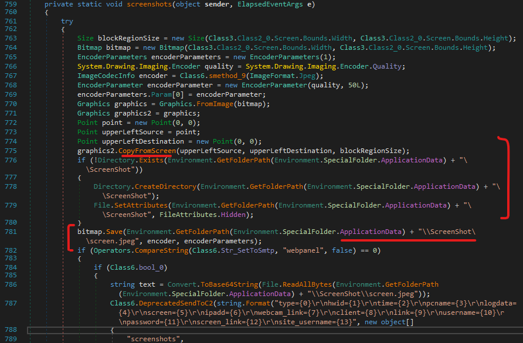
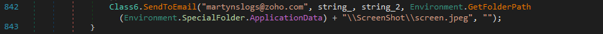
webcam
same as screenshot function, it saves the webcam capture to %APPDATA% \\CamCampture\\webcam.jpeg and send it.
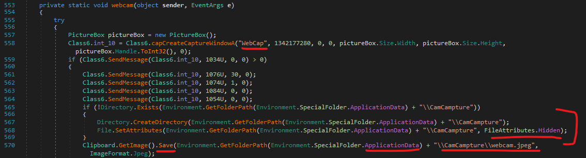
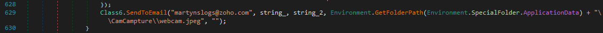
These Functions are all controlled and managed by Boolean values to enable or disable features. If enabled, a timer will be set and run inside a thread and the function is called when an interval is elapsed.
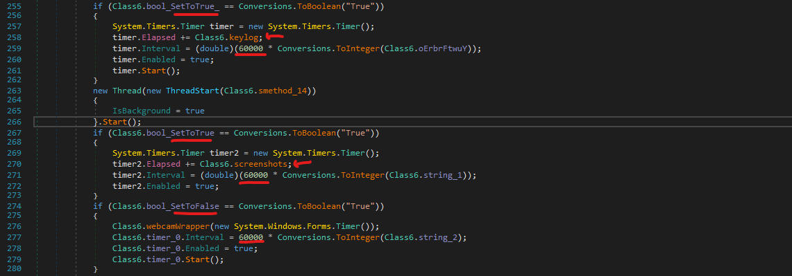
File will also read an executable embedded inside it as a resource then drop it inside %TEMP% with the name format {a-zA-Z}{3}\.exe, it the will keep running in an infinite loop checking if the Daemon is still running and if not it will start it with the command line argument equals to the main malware full path.
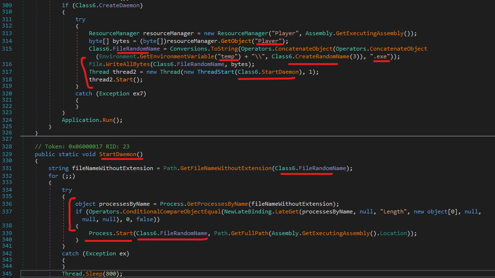

the Daemon main function creates a thread and in the thread function, it checks to see if the file malware process is running to runs it again whenever it's killed.
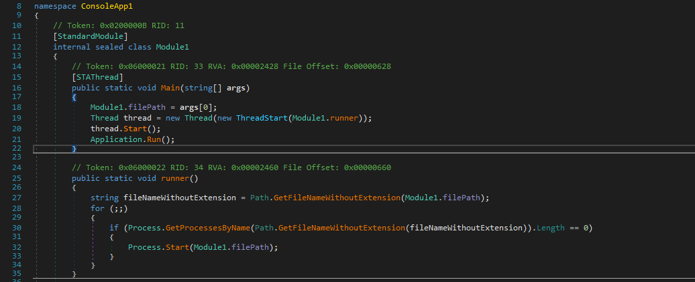
Which will result in a behavior where each module runs the other one
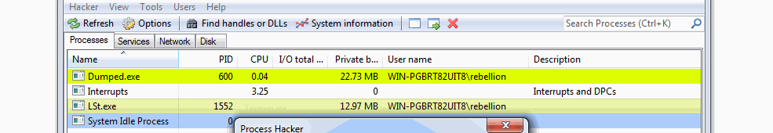
Attackers also have implemented some anti-debugging and anti-VM techniques includes:
- Detect and kill any running process with the same name as any member of a given string array, Processes targeted are
anubis,a2servic,ashWebSv,hvk,avgemc,bdagent,avp,keyscrambler,mbam,ekrn,egui,npfmsg,ollydbg,outpost,wireshark,mcagent,mcuimgr,clamauto,cpf,ewido,FPAVServer,SbieSvc,antigen,ccapp,tmlisten,pccntmon,earthagent,spysweeper - Check if the current directory contains
samplestring - Check if the current file name contains
samplestring - Check for Processes/Services with one of the following names
DF5Serv,VBoxservice,vmwareservice,vpcmap,vmsrvc - Check for a window's title set to
Wireshark
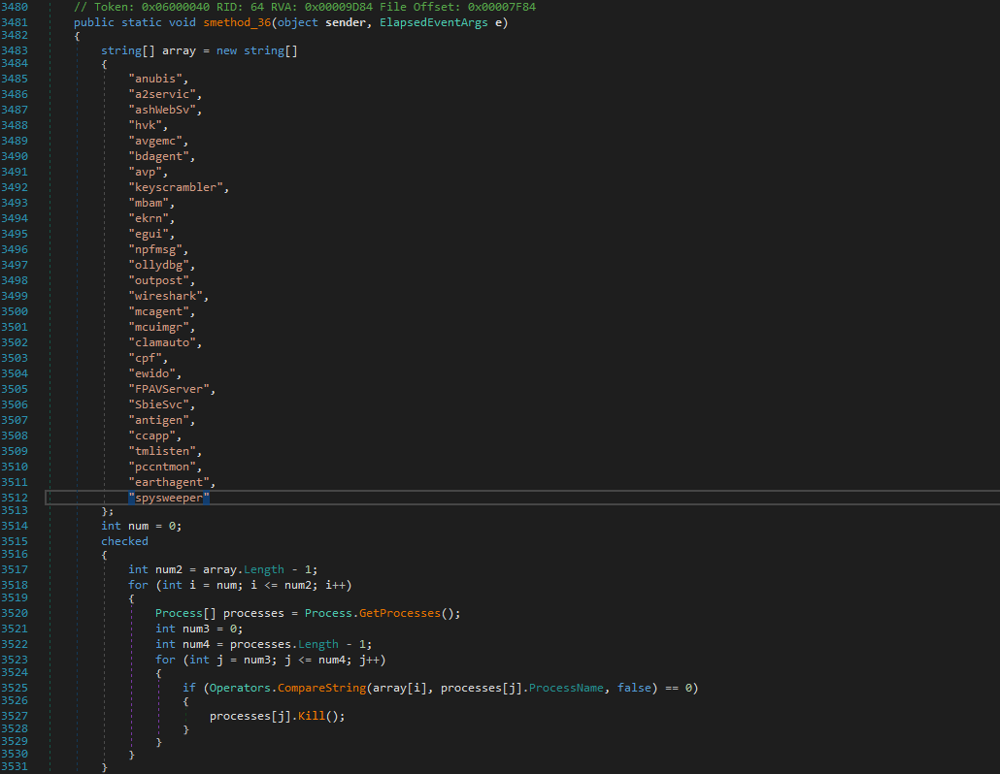
Summary
IOCs
| Type | IOC |
|---|---|
| Hash | 13E9CDE3F15E642E754AAE63259BB79ED08D1ACDA93A3244862399C44703C007 |
| Hash | A85965990F1216F65A8319DBFE52DBA7F24731FBD2672D8D7200CC236863D7 |
| Hash | B4F81D9D74E010714CD227D3106B5E70928D495E3FD54F535B665F25EB581D3A |
| Hash | C2CAE82E01D954E3A50FEAEBCD3F75DE7416A851EA855D6F0E8AAAC84A507CA3 |
| martynslogs@zoho.com | |
| Path | %TEMP%log.tmp |
| Path | %APPDATA%\Screenshot\screen.jpeg |
| Path | %APPDATA% \CamCampture\webcam.jpeg |
| Path | %TEMP%[a-zA-Z]{3}\.exe |
Mitre att&ck matrix
| Domain | ID | Name | Use |
|---|---|---|---|
| Enterprise | T1087 | Account Discovery | collects account information from the victim’s machine. |
| Enterprise | T1115 | Clipboard Data | steal data from the victim’s clipboard. |
| Enterprise | T1022 | Data Encrypted | encrypts the data with 3DES before sending it over the C2 server. |
| Enterprise | T1089 | Disabling Security Tools | has the capability to kill any running analysis processes and AV software. |
| Enterprise | T1048 | Exfiltration Over Alternative Protocol | has routines for exfiltration over SMTP, FTP, and HTTP. |
| Enterprise | T1203 | Exploitation for Client Execution | exploits CVE-2017-11882 in Microsoft’s Equation Editor to execute a process. |
| Enterprise | T1056 | Input Capture | log keystrokes on the victim’s machine. |
| Enterprise | T1027 | Obfuscated Files or Information | obfuscates its code in an apparent attempt to make analysis difficult. |
| Enterprise | T1057 | Process Discovery | lists the current running processes on the system. |
| Enterprise | T1060 | Registry Run Keys / Startup Folder | adds itself to the Registry as a startup program to establish persistence. |
| Enterprise | T1105 | Remote File Copy | download additional files for execution on the victim’s machine. |
| Enterprise | T1113 | Screen Capture | capture screenshots of the victim’s desktop. |
| Enterprise | T1071 | Standard Application Layer Protocol | has used HTTP and SMTP for C2 communications. |
| Enterprise | T1082 | System Information Discovery | collects the system's computer name and also has the capability to collect information on the processor, memory, and video card from the system. |
| Enterprise | T1016 | System Network Configuration Discovery | collect the IP address of the victim machine. |
| Enterprise | T1033 | System Owner/User Discovery | collects the username from the victim’s machine. |
| Enterprise | T1124 | System Time Discovery | collect the timestamp from the victim’s machine. |
| Enterprise | T1065 | Uncommonly Used Port | has enabled TCP on port 587 for C2 communications. |
| Enterprise | T1125 | Video Capture | access the victim’s webcam and record video. |
External references
- https://app.any.run/tasks/e5bc479c-e9d9-4ed0-b31a-57d5587e399e/
- https://www.fortinet.com/blog/threat-research/analysis-of-new-agent-tesla-spyware-variant.html
- https://www.endgame.com/blog/technical-blog/ten-process-injection-techniques-technical-survey-common-and-trending-process
- http://theevilbit.blogspot.com/2018/08/about-writeprocessmemory.html
- https://techtalk.pcmatic.com/2017/11/29/unpacking-malware-part-2-reconstructing-import-address-table/
- https://lifeinhex.com/string-decryption-with-de4dot/
- https://docs.microsoft.com/en-us/windows-hardware/customize/desktop/unattend/microsoft-windows-lua-settings-enablelua
- https://winaero.com/blog/how-to-turn-off-and-disable-uac-in-windows-10/
- https://attack.mitre.org/software/S0331/